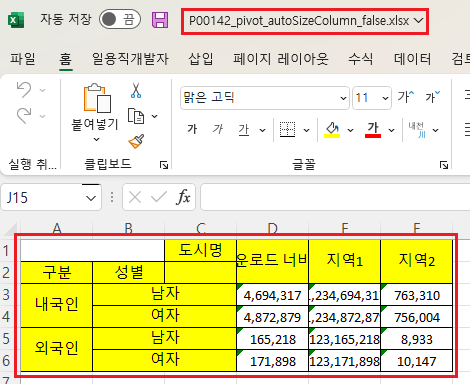
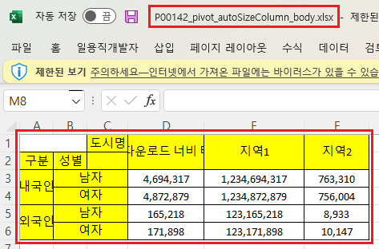
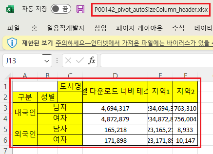
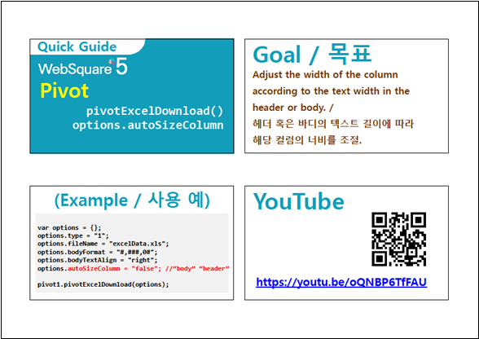

Pivot의 엑셀 다운로드 시 컬럼 너비 자동 조절 옵션 비교 예제입니다. pivotExcelDownload 호출 시 옵션 autoSizeColumn에 값을 지정하여 사용할 수 있습니다. 지정값별 동작은 아래와 같습니다.
autoSizeColumn : "false" - (기본 설정) 너비 자동 맞춤을 수행하지 않음.
autoSizeColumn : "body" – 피벗의 Body를 기준으로 너비를 조정.
autoSizeColumn : "header" – 피벗의 Header를 기준으로 너비를 조정.
엑셀 다운로드 - 옵션 미적용
엑셀 다운로드 - Body 데이터의 길이를 기준으로 컬럼 너비 지정
엑셀 다운로드 - Header 헤더의 길이를 기준으로 컬럼 너비 지정
STEP1. 버튼 엑셀 다운로드 - 옵션 미적용을 클릭합니다.
다운로드된 엑셀 파일 "P00142_pivot_autoSizeColumn_false.xlsx"을 실행합니다.
엑셀의 컬럼 너비를 확인합니다.
[다운로드된 엑셀(2021) 파일 예시]

STEP1. 버튼 엑셀 다운로드 - Body 데이터의 길이를 기준으로 컬럼 너비 지정을 클릭합니다.
다운로드된 엑셀 파일 "P00142_pivot_autoSizeColumn_body.xlsx"을 실행합니다.
엑셀의 컬럼 너비를 확인합니다.
컬럼의 너비가 Body의 데이터 길이를 기준으로 자동 조절되었습니다.
[다운로드된 엑셀(2021) 파일 예시]

STEP1. 버튼 엑셀 다운로드 - Header 헤더의 길이를 기준으로 컬럼 너비 지정을 클릭합니다.
다운로드된 엑셀 파일 "P00142_pivot_autoSizeColumn_header.xlsx"을 실행합니다.
엑셀의 컬럼 너비를 확인합니다.
컬럼의 너비가 Header의 데이터 길이를 기준으로 자동 조절되었습니다.
[다운로드된 엑셀(2021) 파일 예시]

원하는 시점에 엑셀 다운로드 스크립트를 작성합니다.
[소스 코드 예시]
var jsnOptions; //엑셀 다운로드 옵션 jsnOptions = { "fileName" : "P00142_pivot_autoSizeColumn.xlsx", "autoSizeColumn" : "body" //false, body, header }; //"autoSizeColumn" : "body" – 피벗의 Body를 기준으로 너비를 조정. //"autoSizeColumn" : "header" – 피벗의 Header를 기준으로 너비를 조정. //"autoSizeColumn" : "false" - (기본 값) 너비 자동 맞춤을 수행하지 않음. //Pivot [piv_ex01]를 엑셀로 다운로드 합니다. piv_ex01.pivotExcelDownload(jsnOptions);
pivotExcelDownload( options , infoArr )
[웹스퀘어5 SP5 개발 가이드] Pivot
링크 : https://docs1.inswave.com/sp5_user_guide/86bdcf48029b958b#4e8a7b2ee089c284
[웹스퀘어5 SP5 개발 가이드] Pivot - Excel 파일로 다운로드
링크 : https://docs1.inswave.com/sp5_user_guide/86bdcf48029b958b#4ed47c0be796a2f0
[웹스퀘어5 SP5 개발 가이드] Pivot - Excel 파일로 다운로드 컬럼 너비 조정
링크 : https://docs1.inswave.com/sp5_user_guide/86bdcf48029b958b#253463d37d8a674a
Pivot - Excel 파일로 다운로드 컬럼 너비 조정
링크 : https://youtu.be/oQNBP6TfFAU
